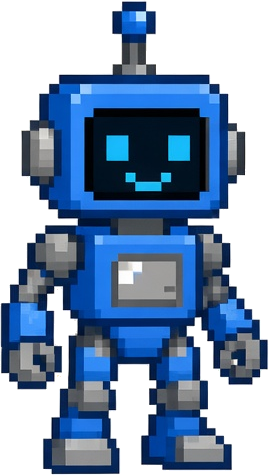

示例合集 · 01STAGE 02
AI 是程序
不是生命
▶ PRESS START


提示
AI 本质上是电脑里运行的程序。你给它输入，它经过计算，给你一个结果。
AI 本质上是电脑里运行的程序。你给它输入，它经过计算，给你一个结果。
输入▶▶计算▶▶结果
1P 普通程序
怎么做事，全靠人提前把规则一条条写好。
2P 现在大多数 AI
人给它大量数据，它自己从里面找出规律。
VS
它没有意识，
也没有感受。
也没有感受。
它能写出带情绪的话，但它自己没有情绪。
※ 早期也有不少 AI 是靠人写规则做出来的，所以 AI 不全是机器学习。
来源：IBM · John McCarthy · Google■ □ ■